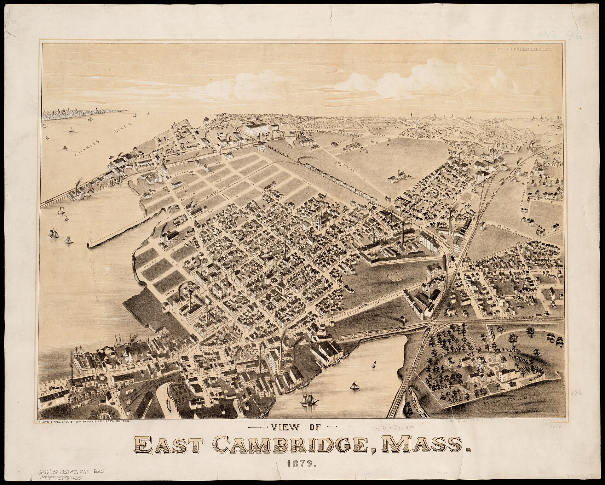

How to read the record

The council runs on paperwork
Every meeting is a stack of numbered items. Six kinds cover nearly everything:
Policy orders are a councillor's formal request, usually aimed at the City Manager, not a law. City Manager's reports are what the administration sends back: reports, appointments, money, answers. Resolutions are congratulations and condolences, still voted on. Applications and petitions are someone asking permission: a sign, a curb cut, a zoning change. Ordinances are actual lawmaking, in multiple readings. And awaiting reports is the ledger of questions the Council asked and hasn't had answered.
How a roll call reads
Nine seats, and every seat accounted for:
- AB voted yes
- CD voted no
- EF voted “present”, a recorded abstention, often deliberate
- GH absent, or unaccounted for; we say which, and never guess
On real pages those circles are councillors' photos, names underneath, always in full color; only the ring changes.
The five checks
You're comparing our page against the city's. The city is the authority; this site is the one on trial.
- The headline: same docket number, describing the same thing?
- The outcome: same official action, tally, and meeting date?
- The roll call: every name, every column; a face in the wrong column is the highest-value find there is.
- The documents: do our rendered documents match the city's PDFs?
- The links: click the 🏛 button; does it land on this item? A page that loads isn't necessarily the right page.
Practice, then go
Three practice pages carry one planted mistake each. Practice is worth zero points. Everyone starts the scoreboard at 0. Finding the planted mistakes is what certifies you.
practice A a resolution: something small is off practice B an appointment: read the orders closely practice C a zoning petition: trust nothing, click everythingCheck your answers when you've hunted all three, then file your certification — what you found on each practice page, under your chosen screen name. It becomes your first measured reliability score, on the public ledger.
Found them? Pick any page and audit it for real →